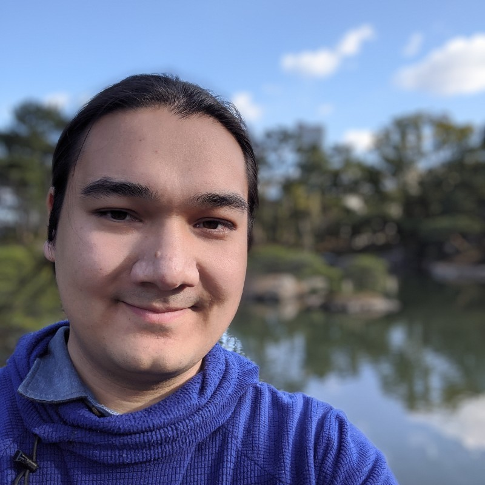
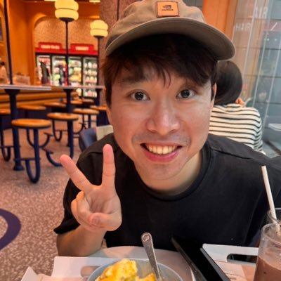
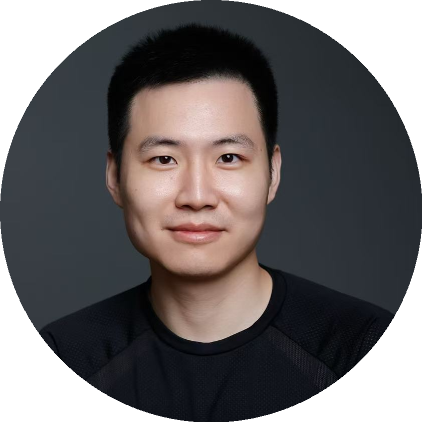
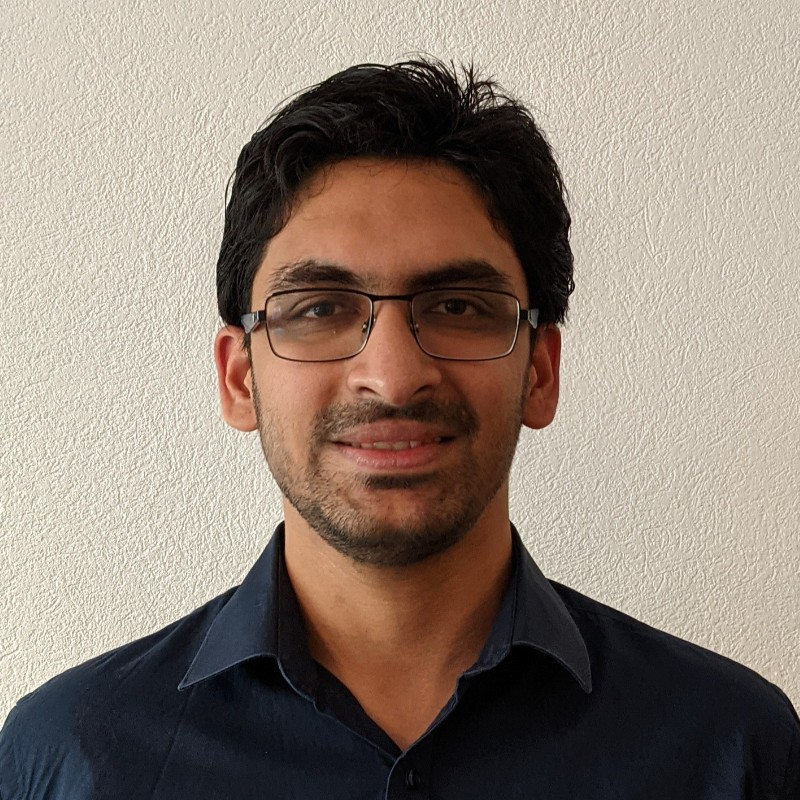

This tutorial provides a detailed journey through multimodal speech modeling, organized into three parts: (1) Understanding, (2) Generation, and (3) Real-Time/Interactive Systems.
We begin by reviewing how traditional speech processing has evolved with the advent of foundation models and audio-visual learning, and then delve into cutting-edge research that bridges audio, language, and visual modalities.
The goal is to equip participants with both the conceptual frameworks and technical know-how to understand current audio-visual foundation models and to inspire new research directions at the nexus of speech and multimodality.
Generative perspective of multimodal speech understanding with LMs
Visual generation toward VideoGen & Multimodal conditional AudioGen
Assistive AI with joint generation and understanding capabilities
A comprehensive half-day tutorial covering the latest advances
World-class researchers from leading institutions
David M. Chan, Ph.D., is a postdoctoral scholar at the University of California, Berkeley, specializing in multimodal learning, human-computer interaction, and generative AI, including large language models (LLMs) and foundational models. His research focuses on developing efficient and scalable methods for integrating vision, audio, and language models, improving AI-human collaboration (i.e., Video Dubbing), and mitigating hallucination in generative AI systems. In industry, he has worked with leading organizations including Amazon, Google and NASA. He is also the maintainer of TSNE-CUDA, an open-source GPU-accelerated tool for high-dimensional data visualization used by over 40,000 researchers. He holds both a PhD and MS in Computer Science from UC Berkeley and dual BSc degrees in Computer Science and Mathematics from the University of Denver.
Dr. Huck Yang is a Sr. Research Scientist at NVIDIA Research working on robust speech recognition and its connections to large-scale multimodal models. Prior to joining NVIDIA, he was a scientist at Amazon Alexa ASR-LM and a research intern at Google Speech/Brain. His research focuses on speech–language alignment, large-scale multilingual speech modeling, and adapting LLMs for speech processing tasks. Dr. Yang developed the first cross-modal acoustic alignment techniques [ICML 2021] to integrate temporal signals into LLMs. He obtained his Ph.D. and M.Sc. from Georgia Institute of Technology under Prof. Chin-Hui Lee and B.Sc from National Taiwan University. He has served in the Technical Committee in Applied Signal Processing Systems of IEEE SPS since 2022 and received a Best Student Paper Award Nomination at Interspeech 2023 and Best Industry Paper Honorable Mention Award at ACL 2025.
Xudong is a Research Scientist with Meta Superintelligence Labs. He received his Ph.D. in EECS from UC Berkeley, where he was affiliated with the Berkeley AI Research (BAIR) lab under the mentorship of Prof. Trevor Darrell. Before joining BAIR, he was a staff member of the International Computer Science Institute (ICSI). He received his Master's degree in Intelligent Systems, Robotics, and Control from UC San Diego, advised by Prof. Nuno Vasconcelos. His research focuses on visual generation and multimodal learning.
Dr. Apoorv Vyas is a Research Scientist at Meta's Fundamental AI Research (FAIR) team, specializing in audio generation and multimodal learning. He earned his Ph.D. in Electrical Engineering from École Polytechnique Fédérale de Lausanne (EPFL), where he focused on improving speech recognition for low-resource languages through unsupervised learning. His research interests span deep learning, automatic speech recognition, audio generation, and computer vision. Prior to his doctoral studies, Apoorv gained industry experience at Intel as a System Engineer and at Oracle as an Applications Engineer. He holds a Bachelor's degree in Electronics and Electrical Engineering from the Indian Institute of Technology, Guwahati. At Meta, he has contributed to groundbreaking work on audio generation models including AudioCraft and multimodal conditional generation systems.